أنشأ الإسرائيليون سداً ترابياً على الضفة الشرقية لقناة السويس بارتفاع يصل في الأماكن المهمة إلى 20 م، وبميل يتراوح ما بين 45 و65 درجة بهدف منع عبور أي مركبةٍ برمائيةٍ من القناة إلى الضفة الشرقية. وعلى طول هذا السد الترابي بني خط دفاعي قوي أطلق عليه «خط بارليف» يتكون من 35 حصناً تتراوح المسافة بينهم ما بين 1 كم في الاتجاهات المهمة و5 كم في الاتجاهات غير المهمة على طول القناة، وفي منطقة البحيرات المرة تباعدت هذه الحصون لتصل المسافة بينها ما بين 5 إلى 10 كم.
كانت تلك الحصون مدفونة في الأرض وذات أسقف يمكنها تحمل قصف المدفعية وكانت تحيط بها الألغام والأسلاك الشائكة الكثيفة لتصعيب مهمة الاقتراب منها، وتمكينها من غمر القناة بالنيران الكثيفة لمنع أي مهمة عبور للقوات المصرية، وبين تلك الحصون كانت هناك مرابض للدبابات يفصل بين كل منها 100 متر يمكن للقوات الإسرائيلية احتلالها في حالات التوتر لصد الهجمات.

كفل تصميم الخط الدفاعي للدبابات الإسرائيلية التحرك بحرية من مربض لآخر دون أن تراها القوات المصرية من الجانب الغربي للقناة، كما تم تزويد تلك الحصون بمؤن وذخيرة تجعلها تكتفي ذاتياً لمدة سبعة أيام، وتم تأمين وسائل اتصالها بشكل جيد مع قياداتها بالخطوط الخلفية. وخصصت القيادة الإسرائيلية لواء مشاة لاحتلال تلك الحصون ولواء مدرع يعمل كاحتياطي قريب متمركز على بعد 5 إلى 8 كم، ولواءين مدرعين يتمركزان بمنطقة أبعد على بعد 25 إلى 30 كم.
حينما تولى السادات منصب الرئاسة عام 1970 لم تكن القيادة العسكرية المصرية تمتلك خططاً عسكريةً لمهاجمة القوات الإسرائيلية، والتي تحتل شبه جزيرة سيناء وقطاع غزة منذ حرب 1967 وكل ما كانت تمتلكه هو خطة دفاعية أطلق عليها اسم «الخطة 200»، بجانب خطة تعرضية تسمى «جرانيت» والتي تشمل تنفيذ بعض الغارات على مواقع القوات الإسرائيلية في سيناء إلا أنها لم تكن بالمستوى الذي يسمح بتسميتها خطةً هجومية.
بدأ الإعداد للخطط الهجومية المصرية عقب تولي الفريق سعد الشاذلي منصب رئيس أركان حرب القوات المسلحة في 16 مايو/أيار 1971 والذي بدأ مهام عمله بدراسة الإمكانيات الفعلية للقوات المسلحة المصرية ومقارنتها بالمعلومات المتاحة عن قدرات الجيش الإسرائيلي وذلك بهدف التوصل إلى خطةٍ هجوميةٍ واقعيةٍ تتوافق مع الإمكانيات المتاحة للقوات المصرية في ذلك الوقت. وخلص الشاذلي من دراسته -وطبقاً للإمكانيات المتاحة- بأن المعركة يجب أن تكون محدودةً وأن يكون هدفها عبور قناة السويس وتدمير خط بارليف ثم اتخاذ أوضاعٍ دفاعيةٍ على مسافةٍ تتراوح ما بين 10 و12 كم شرق القناة، وأن تبقى القوات في تلك الأوضاع الجديدة إلى أن يتم تجهيزها وتدريبها للقيام بالمرحلة التالية من تحرير الأرض.
عرض الشاذلي فكرته على وزير الحربية الفريق الأول محمد صادق، إلا أنه عارضها بحجة أنها ستبقي ما يزيد عن 60,000 كم² من أراضي سيناء بالإضافة إلى قطاع غزة تحت الاحتلال الإسرائيلي فضلاً عن أنها ستوجد وضعاً عسكرياً أصعبَ من وضع الجبهة الحالي الذي يحتمي خلف قناة السويس باعتبارها مانعاً مائياً جيداً، وكان يرغب في التخطيط لعمليةٍ عسكريةٍ هجوميةٍ تهدف إلى تدمير جميع القوات الإسرائيلية في سيناء لتحريرها هي وقطاع غزة في عمليةٍ واحدةٍ ومستمرة. في نهاية المطاف وبعد نقاشاتٍ وجلساتٍ مطولةٍ جرى التوصل إلى حلٍّ وسطٍ تمثل في إعداد خطتين الأولى هي «العملية/الخطة 41» التي تهدف إلى الاستيلاء على المضائق الجبلية في سيناء وقد أُعدت بالتعاون مع المستشارين السوڤييت بهدف إطلاعهم على احتياجات القوات المسلحة لتنفيذ الخطة، والثانية هي «خطة المآذن العالية» وتهدف إلى عبور قناة السويس وتدمير خط بارليف واحتلاله واتخاذ أوضاعٍ دفاعيةٍ واستنزاف إمكانيات الجيش الإسرائيلي إلى حين القيام بالمرحلة التالية من المعركة، وجرى إعداد تلك الخطة في سريةٍ تامّةٍ بعيداً عن أعين المستشارين السوڤييت. وخلال عام 1972 أدخلت تعديلات على «العملية/الخطة 41» وتغير اسمها إلى «جرانيت 2» ولكن بقي جوهرها كما هو. وركزت القوات المسلحة المصرية على تنفيذ «خطة المآذن العالية» التي كانت تناسب إمكاناتها في ذلك الوقت، وتغير اسم الخطة في سبتمبر/أيلول 1973 إلى «الخطة بدر» بعد أن تحدد موعد الهجوم ليكون السادس من أكتوبر/تشرين الأول من العام نفسه. وبناءً على هذه الخطة صدر «التوجيه 41» عن رئاسة الأركان المصرية الذي نظم عملية العبور.
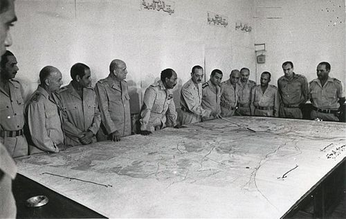
في 22 يوليو/تموز 1972 طلب الرئيس السادات سحب المستشارين العسكريين السوڤييت من مصر، وقرر أن الحرب ستجري بما هو متوفر من السلاح والمعدات وضمن طاقتها التي تسمح بها. منذ تكليف السادات للقوات المسلحة بالاستعداد للحرب في مؤتمر الجيزة يوم 24 أكتوبر/تشرين الأول 1972 عملت هيئة عمليات القوات المسلحة برئاسة اللواء عبد الغني الجمسي على تحديد أنسب التوقيتات للهجوم، وذلك بناءً على عدة عواملَ منها الموقف العسكري الإسرائيلي، وحالة القوات المصرية، والمواصفات الفنية للقناة من ناحية حالة المد والجزر وسرعة التيار واتجاهه والأحوال الجوية، وذلك بهدف تحقيق أفضل الظروف للقوات المصرية وأسوئها للقوات الإسرائيلية، مع مراعاة أن يناسب التاريخ الجبهة السورية أيضاً (يبدأ الثلج والجليد في نوفمبر/تشرين الثاني على مرتفعات الجولان فتوجب ألا تتأخر الحرب عن أكتوبر). بناءً على العديد من الدراسات حددت شهور مايو/أيار أو أغسطس/آب أو سبتمبر/أيلول-أكتوبر/تشرين الأول كأنسب الشهور للهجوم، وكان أفضلها شهر أكتوبر/تشرين الأول 1973 لعدة أسبابٍ منها لكونه أفضلَ الشهورِ بالنسبة لحالة المناخ على كلا الجبهتين المصرية والسورية، كما أن الانتخابات البرلمانية الإسرائيلية ستُجرى يوم 28 منه وسينشغلُ الشعب والجيش بالحملات الانتخابية (باعتبار جميع المدنيين القادرين على حمل السلاح هم عناصر احتياطٍ في الجيش في إسرائيل)، وبعد دراسة العطلات الرسمية في إسرائيل حيث تكون قواتها المسلحة في أدنى استعداداتها وُجد أن يوم السبت -عيد الغفران أو كيبور- 6 أكتوبر 1973 م / 10 رمضان 1393 هـ هو الأنسب لأنه اليوم الوحيد في السنة الذي تتوقف فيه الإذاعة والتلفزة عن البث، مما سيتطلب من إسرائيل وقتاً أطول لاستدعاء الاحتياطي الذي يمثل القاعدة العريضة لقواتها المسلحة. واختيرت الساعة 14:00 (1400 وفق العرف العسكري) بعد الظهر لانطلاق الهجوم حيث تكون الشمس جهة الغرب خلف ظهور المصريين وتغشى عيون الإسرائيليين مما يُتيح رؤيةً جيدةً جداً للمهاجمين على عكس المدافعين، وتقرر هذا في الاجتماع المشترك السري بين القيادتين العسكريتين المصرية والسورية برئاسة وزيريْ الدفاع في 22 أغسطس/آب في قيادة القوات البحرية في الإسكندرية.
في يوليو/تموز 1972 اجتمع الرئيس السادات مع رئيس المخابرات العامة ومدير المخابرات الحربية ومستشار الأمن القومي والقائد العام للقوات المسلحة لوضع خطة خداع استراتيجي تسمح لمصر بالتفوق على التقدم التكنولوجي والتسليحي الإسرائيلي عن طريق إخفاء أي علامات للاستعداد للحرب وحتى لا تقوم إسرائيل بضربة إجهاضية للقوات المصرية في مرحلة الإعداد على الجبهة، واشتملت الخطة على ستة محاور رئيسية تضمنت إجراءات تتعلق بالجبهة الداخلية، إجراءات تتعلق بنقل المعدات للجبهة، إجراءات خداع ميدانية، إجراءات خداع سيادية، تأمين تحركات واستعدادات القوات المسلحة، توفير المعلومات السرية عن القوات الإسرائيلية وتضليلها.
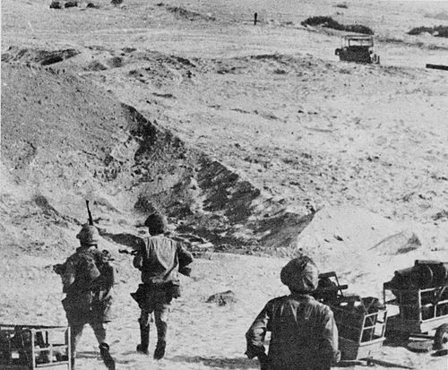
شكلت قناة السويس مانعاً مائياً صناعياً صعب العبور، إذ يبلغ عرضها ما بين 180 إلى 200 متر، وأجنابها حادة ومكسوة بالحجارة مما يمنع عبور الدبابات البرمائية، بالإضافة إلى ذلك أنشأ الإسرائيليون سداً ترابياً على الضفة الشرقية أسسوه على التلال الرملية الناتجة من حفر القناة عند شقها، وعلى طول هذا السد شيدوا خطَّ دفاعٍ منيعٍ جداً مؤلفٍ من خمسةٍ وثلاثين حصناً منيعاً من بور فؤاد شمالاً إلى لسان بور توفيق جنوباً أطلقوا عليه «خط بارليف» نسبةً إلى حاييم بارليف رئيس الأركان الإسرائيلي السابق (ما بين 1968/1/1 - 1972/1/1). استندت خطة العبور إلى فتح ثغراتٍ في الساتر الترابي الشرقي لإنشاء رؤوس الجسور وتسهيل عبور المشاة والمعدات والمركبات باستخدام فكرةٍ بسيطةٍ ولكنها فعالةٌ، وهي التجريف بضغط المياه باستخدام المضخات وخُصِّص لكل ثغرةٍ خمس مضخاتٍ يمكنها إزاحة 1500 متر مكعب من الأتربة خلال ساعتين بعدد أفراد من 10 إلى 15 جندي.
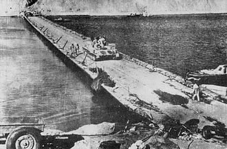
للتغلب على نيران النابالم المشتعلة على سطح القناة خُطِّط لسد فتحات أنابيب المواد المشتعلة قبل بدء العبور بمادة قوية سريعة التصلب، مع قصف خزاناتها بالمدفعية أثناء فترة التمهيد المدفعي الذي يسبق الهجوم، وانتخاب نقط عبور فوق اتجاه التيار لتفادي تأثير السائل المحترق. ولتدعيم المشاة العابرة إلى الضفة الشرقية بالذخيرة والمؤن -ريثما يبدأ عملُ الجسور وبجري نقلُ المعداتِ والأسلحةِ الثقيلة- جرى تغيير الشدات الميدانية لجنود المشاة لتسمح بحمل أوزانٍ تصل حتى ثلاثين كيلوجراماً ويمكنها السماحُ للجندي بالتحرك بيسرٍ داخل أرض المعركة، كما جرى إمدادهم بعربات جرِّ يدويِّ يمكنها حمل مئةٍ وخمسينَ كيلوجراماً من الذخيرة والمعدات وتُجرُّ بواسطة فردين، وزُود المشاة بنظاراتٍ مُعتمةٍ يُمكِّنُ ارتداؤها من مواجهة الأضواء المبهرة التي قد تستخدم لإعاقة ضرباتهم، بالإضافة إلى سلالم الحبال المستخدمة في البحرية المصنوعة من درجاتٍ خشبيةٍ وأجنابٍ من الحبال مما يسهل طيه وحمله ويمنع غوص أرجل الجنود وعرباتهم في رمال الساتر الترابي.
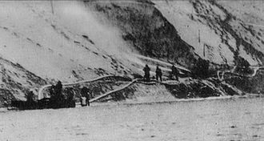
في تمام الساعة 1400 من يوم 6 أكتوبر/تشرين الأول 1973 نفذت 220 طائرة حربية مصرية ضربة جوية على الأهداف الإسرائيلية شرقي القناة (كان أقصى عمقٍ ممكنٍ للطائرات المصرية خط المضائق في منتصف سيناء، وعليه غطت الضربة الجوية النصف الغربي من سيناء عدا هجوم واحد قصف مطاراً جنوب العريش). عبرت الطائرات على ارتفاعاتٍ منخفضةٍ للغاية (حوالي 30 م) لتفادي الرادارات الإسرائيلية، وقد استهدفت المطارات ومراكز القيادة ومحطات الرادار والإعاقة الإلكترونية وبطاريات الدفاع الجوي وتجمعات الأفراد والمدرعات والدبابات والمدفعية والنقاط الحصينة في خط بارليف ومصافي النفط ومخازن الذخيرة. جاء في تقرير قائد القوى الجوية عقب الهجوم أن الضربة حققت 95 % من أهدافها الموضوعة، وخسرت أحد عشر طياراً شهيداً منهم ستة طيارين في الغارة على مطار الطور قرب شرم الشيخ ويعود ذلك لفقدان عنصر المفاجأة بسبب ملاقاتهم أربع طائراتٍ فانتوم كانت تقوم بدوريةٍ اعتياديةٍ فوق شرم الشيخ فجرت معركة غير متكافئةٍ بسبب التفوق النوعي لطائرة الفانتوم وقتئذٍ.
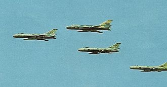
بعد عبور الطائرات المصرية بخمس دقائقَ بدأتِ المدفعية المصرية (حوالي 2200 مدفعٍ) قصف التحصينات والأهداف الإسرائيلية الواقعة شرقَ القناةِ قصفاً كثيفاً تحضيراً لعبور المشاة، فيما تسللت عناصر من سلاح المهندسين والصاعقة إلى الشاطئ الشرقي للقناة لإغلاق الأنابيب التي تضخ السائل المشتعل (النابالم) إلى سطح المياه. في تمام الساعة 1420 توقفت المدفعية ذات السمت (خط المرور) العالي عن قصف النسق الأمامي لخط بارليف ونقلت نيرانها إلى العمق حيث مواقعُ النسق الثاني، وقامت المدفعية ذات السمت (خط المرور) المسطح بالقصف المباشر على مواقع خط بارليف لتأمين عبور المشاة تحت غطاءٍ من نيرانها.
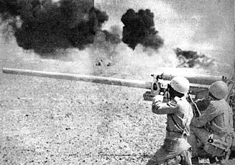
في تمام الساعة 1830 كان ألفا ضابطٍ وثلاثين ألف جنديٍّ من خمس فرق مشاةٍ؛ ثلاث من الجيش الثاني الميداني وقطاعه من شمال البحيرات المرة حتى بورسعيد، واثنتان من الجيش الثالث الميداني وقطاعه من جنوب البحيرات المرة حتى السويس، قد عبروا القناة، واحتفظوا بخمسة رؤوس جسورٍ (واحدٍ لكل فرقة)، واستمر سلاح المهندسين بفتح الثغرات في الساتر الترابي لإتمام مرور الدبابات والمركبات البرية، فيما عبر لواءُ برمائيُّ مكونُ من عشرين دبابةٍ برمائيةٍ وثمانين مركبةٍ برمائيةٍ عبر البحيرات المرة في قطاع الجيش الثالث، وبدأ يالتعامل مع القوات الإسرائيلية. في تمام الساعة 2030 اكتمل بناء أول جسرٍ ثقيلٍ، وفي تمام الساعة 2230 اكتمل إنشاء سبعةِ جسورٍ أخرى وبدأت الدبابات والأسلحة الثقيلة تتدفق نحو الشرق مستخدمةً هذه الجسورَ وإحدى وثلاثين معدّيةً.
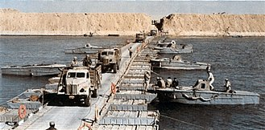
كانت القواتُ المصرية صبيحةَ يوم الأحد 7 أكتوبر/تشرين الأول قد أنجزت عبورها لقناة السويس وأصبح لدى القيادة العامة خمس فرق مشاةٍ بكامل أسلحتها على الضفة الشرقية للقناة، بالإضافة إلى ألف دبابةٍ، وتهاوى خط بارليف الدفاعي واستولى الجيش المصري على تحصيناته عدا حصن لسان بور توفيق المنيع جنوب شرق السويس الذي سقط يوم 11 أكتوبر/تشرين الأول، وتحطمت أسطورة الجيش الإسرائيلي الذي لا يقهر. يومَ السابعِ من أكتوبر/تشرين الأول واصلتِ القوات المصرية توسيع رؤوس جسور فرق المشاة وسد الثغرات فيما بينها ضمن نطاق كلٍّ من الجيشين الميدانيين. وكانت القوات الخاصة وقوات الصاعقة المحمولة جواً قد قامت في اليوم السابق بالإسقاط في مؤخرة القوات الإسرائيلية لتنفيذ كمائنَ ضد قوات الاحتياط المتقدمة من الخلف نحو الجبهة على أربعة محاور؛ رمانة (شمالاً)، والطاسة، وممر الجدي، وممر متْلا (جنوباً)، ما أرغم العدو على التحرك ببطءٍ وحذرٍ، وأخّر وصول قواته إلى الميدان لساعاتٍ كانت حاسمةً في تثبيت الوجود العسكري المصري شرق القناة. جرى كذلك تحسين الموقف الإداري والتعبوي (اللوجستي) للقوات لإعطائها دفعةً قويةً لمعاركها التالية. أثناءَ ذلك دَعّمتِ القواتُ الإسرائيليةُ موقفها بالتدريج على الجبهةِ، ودفعت بخمسة ألويةٍ مدرعةٍ وثلاثمئة دبابةٍ لتعويض خسائر الألوية المدرعة الثلاثة التي كانت تتمركز خلف تحصينات خط بارليف. أنجزت قوات الصاعقة المجوقلة [المنقولة جواً] بالحوامات مهامها في ظروفٍ قتاليةٍ بالغة الصعوبة وسيطرةٍ جويةٍ معاديةٍ مطلقة، ماحدا برئيس الأركان الإسرائيلي ديفيد أليعازر ليصف قتالها بالشراسة والشجاعة منقطعة النظير، والقليل جداً منها من استطاع العودة، وبعض الوحدات لم ينج منها أحد (نتيجة حفرياتٍ حديثةٍ بعضها دعمته اعترافاتٌ نشرت مؤخراً جرى الكشف عن إعداماتٍ ميدانيةٍ لجنودٍ أسرى في منطقة الممرات بأمرٍ مباشرٍ من الجنرال شارون). قامت مجموعة الصاعقة المؤلفة من 220 فرداً التي أُنزلت بالحوامات في «رمانة» على المحور الساحلي يوم 6 أكتوبر بتعطيل تقدم لواءٍ مدرعٍ من مجموعة الجنرال أدان نحو الجبهة لأكثرَ من ثلاثين ساعةً (كانت مهمتهم القتالية إعاقة التقدم لست ساعاتٍ فقط)، قبل انسحاب المتبقين (25 فرداً) في 8 أكتوبر/تشرين الأول بعد نفاد الذخيرة في مسيرٍ دام خمسة أيامٍ على الأقدام كانوا فيه يكمنون بالنهار ويتسللون في الليل.
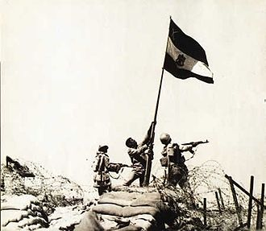
بحلول يوم 8 أكتوبر/تشرين الأول اندمجت رؤوس جسور الفرق الخمس في رأسَيْ جسرين؛ كلٌّ في جيش. امتد رأس جسر الجيش الثاني الميداني من القنطرة شمالاً إلى الدفرسوار جنوباً، ورأس جسر الجيش الثالث الميداني من البحيرات المرة شمالاً إلى بورتوفيق جنوباً، وكان رأس جسر كل جيشٍ يصل إلى عمق حوالي 10 كم، وبقيت ثغرة بين رأسي جسري الجيشين بطول 30-40 كم شرق البحيرات المرة، وهي منطقة خارج نطاق مظلة الدفاع الجوي المصري ولذلك كان التحرك داخلها محدوداً.
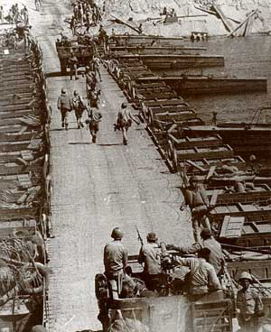
حشدت القيادة الإسرائيلية في يوم 8 أكتوبر/تشرين الأول ثمانية ألويةٍ مدرعةٍ منظمةٍ في ثلاث فرقٍ؛ فرقتان من ثلاثة ألوية مدرعة الأولى في القطاع الشمالي بقيادة الجنرال برن أدان، والثانية في القطاع الأوسط بقيادة الجنرال أرئيل شارون، أما الفرقة الثالثة فكانت مشكلةً من لواءين مدرعين في القطاع الجنوبي بقيادة الجنرال ألبرت ماندلر.
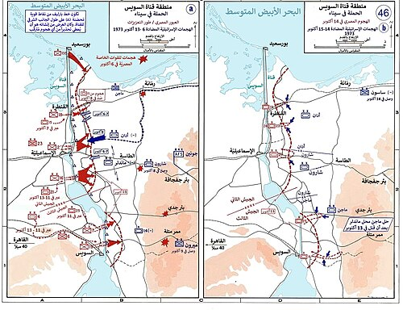
وفي هذا اليوم كان حجم القوات المصرية والإسرائيلية يكاد يكون متساوياً من حيث العدد، فقد كان لدى القيادة الإسرائيلية 960 دبابة في حين كان لدى القيادة المصرية 1000 دبابة، إلا أن التفوق النوعي كان في صالح الإسرائيليين حيث تميزت دباباتهم (معظمها سنتوريون وإم 60 الأمريكية، وبعضها ليوبارد الألمانية) بأن جميع مدافعها عيار 105 ملم ومجهزة بوسائل تقدير المسافة والتسديد والرؤية الليلية، في حين اختلفت أعيرة مدافع الدبابات المصرية ما بين 200 دبابة تي 62 عيار مدفعها 115 ملم، و500 دبابة تي 55 عيار مدفعها 100 ملم، و280 دبابة تي 54 عيار مدفعها 85 ملم، و20 دبابة تي 34 عيار مدفعها 76 ملم، وعليه كان للدبابات الإسرائيلية الأفضلية من حيث مدى المدافع، كما أنها لم تكن مرتبطة تكتيكياً بالدفاع عن المشاة مما أعطاها حرية المناورة والتحرك من قطاع إلى آخر خلال ساعاتٍ قليلة، فيما لم تحظَ الدبابات المصرية بتلك الميزة نظراً لأن مهامها القتالية كانت مقصورةً على معاونة المشاة والدفاع عنها ورفع القدرات القتالية لفرق المشاة، وهو الوضع الذي خططت له القيادة المصرية بحيث يناسب ما تمتلكه في ذلك الوقت من عتادٍ وتسليح، وقد ثبت نجاح تكتيك استخدام إمكانات الدبابات المصرية ضمن تشكيلات المشاة وتحاشيها لمعارك الدبابات المفتوحة خلال الأيام التالية للمعركة.
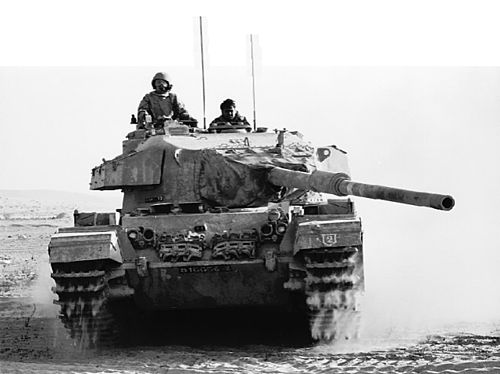
مع إطلالة صباح يوم 8 أكتوبر/تشرين الأول نفذت القوات الإسرائيلية هجومها المضاد في عدة اتجاهات فهاجمت الفرقة 18 مشاة بقيادة فؤاد عزيز بلواءٍ مدرعٍ في اتجاه القنطرة، والفرقة الثانية مشاة بقيادة حسن أبو سعدة بلواءٍ مدرعٍ آخرَ في اتجاه الفردان، وصدت القوات المصرية الهجوم. وبعد الظهيرة قامت القوات الإسرائيلية باستئناف الهجوم بلواءين مدرعين على الفرقة الثانية مشاة في اتجاه الفردان، بينما هاجم لواء مدرع ثالث الفرقة 16 مشاة بقيادة عبد رب النبي حافظ في اتجاه الإسماعيلية، وتصدت الفرق المصرية للهجمات بنجاح.
في 9 أكتوبر/تشرين الأول عاودت القوات الإسرائيلية هجومها ودفعت فرقة أدان بلواءين مدرعين ضد فرقة المشاة الثانية ولواءٍ ثالثٍ مدرعٍ ضد الفرقة 16 مشاة بقيادة عبد رب النبي حافظ في قطاع شرق الإسماعيلية ودارت معركة الفردان بين فرقة آدان والفرقة الثانية مشاة بقيادة حسن أبو سعدة الذي نصب كميناً للدبابات الإسرائيلية المندفعة نحو القناة بتنفيذ انسحابٍ تكتيكيٍّ أمامها حتى وصلت طلائع دباباتها إلى مبعدة نحو ثلاثة كيلومتراتٍ من شط القناة، وأدخلها في «منطقة قتل» (صندوق مفتوح) وفتح النار عليها من ثلاث جهاتٍ في وقتٍ واحدٍ بواسطة المشاة المزودة بالأسلحة المضادة للدبابات (صواريخ مالوتكا م/د المحمولة فردياً)، والدبابات، والمدفعية مما اضطر أدان لسحب قواته بعد تكبده خسائرَ جسيمةً (بقي لديه حوالي 120 دبابةٍ من أصل 280)، وأسر له قائد اللواء 190 المدرع "لواء جولاني" -أحد اللوائين المهاجمَيْن ورأس حربة الهجوم- العقيد عساف ياجوري.
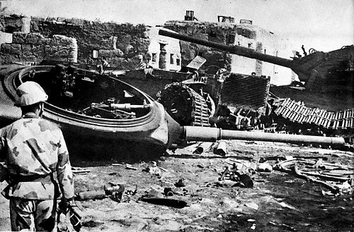
ولم يشنَّ الإسرائيليون أيَّ هجومٍ مركزٍ بعد ذلك اليوم. وبذلك فشل الهجوم الإسرائيلي الرئيس يومي 8 و9 أكتوبر/تشرين الأول في تحقيق هدفه وحافظت فرق المشاة المصرية على مواقعها شرق القناة، باستثناء هجومٍ يومَ 10 أكتوبر/تشرين الأول لكتيبة دباباتٍ إسرائيليةٍ مدعّمةٍ بمشاةٍ ميكانيكيةٍ (متحركةٍ بناقلاتٍ مدرعةٍ) على الجناح الأيسر لفرقة المشاة الثانية جرى صده وإرغام قواته على الانسحاب ليلاً.
شهدت بورسعيد يوم 8 أكتوبر/تشرين الأول أشد المعارك بين قوات الدفاع الجوي المصرية والقوات الجوية الإسرائيلية، حيث بلغ عدد الطائرات الإسرائيلية المهاجمة لبورسعيد في بعض الطلعات أكثر من 50 طائرة، ونجحت قوات الدفاع الجوي المصرية في إيقاع الكثير من الخسائر بتلك الطائرات وتشتيت الهجمة الجوية الإسرائيلية على بورسعيد. كانت بورسعيد مهمةً لأتها أقرب نقاط الجبهة إلى فلسطين المحتلة، فمثلت كتائب الصواريخ بعيدة المدى فيها تهديداً استراتيجياً بإمكان وصولها للعمق الإسرائيلي.
خلال أيام 11 أكتوبر/تشرين الأول و12 أكتوبر/تشرين الأول طلب وزير الحربية المصري المشير أحمد إسماعيل من رئيس الأركان الفريق سعد الشاذلي أكثر من مرة تطوير الهجوم إلى المضائق بهدف تخفيف الضغط على الجبهة السورية، إلا أن الشاذلي عارض بشدة أي تطوير خارج نطاق الـ15 كيلو شرق القناة التي تتمركز القوات ضمنها بحماية مظلة الدفاع الجوي، حيث يعني أي تقدم خارج تلك المظلة وقوع القوات البرية فريسةً سهلةً للطيران الإسرائيلي دون أن تعود بأي فائدة على الجبهة السورية، وللمرة الثالثة أصر الوزير على تطوير الهجوم معللاً ذلك بأنه قرار سياسي، ويجب أن يبدأ صباح يوم 13 أكتوبر/تشرين الأول، فقامت القيادة العامة بإعداد التعليمات الخاصة بتطوير الهجوم وإرسالها إلى قيادات كلٍّ من الجيشين الثاني والثالث. إلا أن قائدي الجيشين اللواء سعد مأمون واللواء عبد المنعم واصل اعترضا على التنفيذ لأسباب الفريق الشاذلي نفسها، فاستدعيا جميعاً إلى اجتماع في القيادة العامة عرض فيه كل منهم وجهة نظره، إلا أن الوزير أصر على تطوير الهجوم بدعوى أنه قرار سياسي، وتأجل فقط تطوير الهجوم من يوم 13 إلى 14 أكتوبر/تشرين الأول.
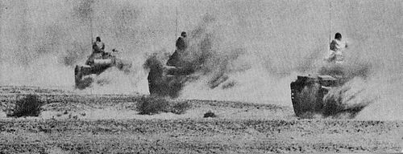
وبناءً على أوامر تطوير الهجوم شرقاً استخدمت القيادة المصرية 4 ألوية مدرعة ولواء مشاة ميكانيكي في أربعة اتجاهات مختلفة، فهاجم لواء مدرع في اتجاه ممر متلا في القطاع الجنوبي، ولواء مشاة ميكانيكي في اتجاه ممر الجدي في القطاع الجنوبي (نطاق عمليات الجيش الثالث)، ولواءان مدرعان في اتجاه الطاسة في القطاع الأوسط، ولواء مدرع في اتجاه بالوظة في القطاع الشمالي (نطاق عمليات الجيش الثاني). ونتيجة لسرعة تعويض القوات الإسرائيلية لخسائرها في الدبابات -التي وصلت إلى 260 دبابة في أيام 8 و9 أكتوبر/تشرين الأول بفعل الجسر الجوي الأمريكي- أصبح لديها تسعمئة دبابةٍ موزعةٍ على ثمانية ألويةٍ مدرعةٍ يوم 13 أكتوبر/تشرين الأول، فكانت مواجهة غير متكافئة بين 900 دبابةٍ إسرائيليةٍ متفوقةٍ من حيث مدى المدفعية، و400 دبابةٍ مصريةٍ في أرض معركةٍ مناسبةٍ للقوات الإسرائيلية وتحت السيطرة التامة لقواتها الجوية، فضلاً عن أن الهجوم جرى مع أول ضوءٍ صبيحة 14 أكتوبر فكانت الشمس في جهة الشرق تغشى عيون المصريين وخلف ظهر الإسرائيليين، كما فقد المصريون عنصر المفاجأة نتيجة المعلومات الاستخباراتية الأمريكية المتحصلة من جولة طائرة التجسس الأمريكية يوم 13 أكتوبر فوق خليج السويس والقناة، ومنها علم الإسرائيليون أن الفرقتين المدرعتين غرب القناة عبرتا نحو الشرق، الأمر الذي يعني تحضيراً لهجومٍ وشيك. ضف إلى ذلك ضعف الدبابات المصرية ت 55 مقابل الدبابات الإسرائيلية من حيث سماكة التدريع، وعيار المدفع (100 ملم مقابل 105 ملم لمدافع الدبابات الإسرائيلية)، وزاوية توجيه رمي المدفع التي تجبرها على إظهار جزء كبير من جسم الدبابة ما يجعلها أكثر عرضةً للإصابة. عدها الكثيرون مقامرةً غير محسوبةٍ خسرت فيها القوات المصرية 250 دبابة في يومٍ واحدٍ، وهو رقم يزيد بكثيرٍ على مجموع خسائر المصريين في الأيام الثماني الأولى للحرب، وعلى ذلك انسحبت القوات المصرية كرةً أخرى إلى داخل رؤوس الجسور شرقيَّ القناة عائدةً تحت مظلة صواريخ الدفاع الجوي. على إثر تعرض قواته إلى ضرباتٍ قويةٍ أصابت اللواء سعد مأمون فائد الجيش الثاني الميداني أزمة قلبية استدعت إخلاءه إلى المستشفى بالقاهرة على غير رغبته، واستبدل به اللواء عبد المنعم خليل.
طبقاً لخطة الهجوم المصرية عبر الجيشان الثاني والثالث القناة بمجموع 1020 دبابة تقريباً واحتُفظ بـ 330 دبابة غرب القناة بحوالي عشرين كيلومتراً، وكانت تلك الدبابات ضمن تشكيل الفرقة 21 المدرعة التي كانت تحمي ظهر الجيش الثاني والفرقة الرابعة المدرعة التي كانت تحمي ظهر الجيش الثالث، وكان بقاءُ الفرقتين في أماكنهما غرب القناة كفيلٌ بصد أي اختراقٍ تقوم به القوات الإسرائيلية على طول الجبهة، إلا أن قرار تطوير الهجوم شرقاً ترتب عليه تحرك الفرقة 21 المدرعة ولواء مدرع من الفرقة الرابعة المدرعة إلى الشرق، وبذلك لم يعد لدى القيادة المصرية سوى لواءين مدرعين غرب القناة، فاختلت موازين القوى وأضحى الموقف مثالياً للقوات الإسرائيلية للتسلل غرباً خلف خطوط الجيشين الثاني والثالث.
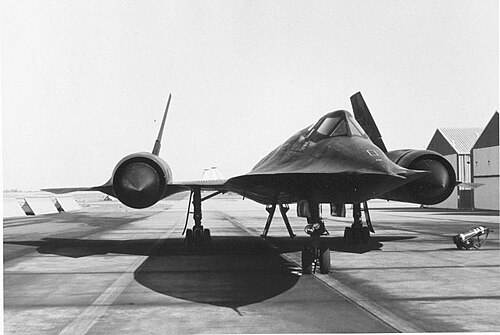
في عصر يوم 13 أكتوبر/تشرين الأول حلقت طائرة استطلاع أمريكية من نوع إس آر-71 فوق منطقة القتال وقامت بتصوير الجبهة بالكامل ولم تستطع الدفاعات الجوية المصرية التعرض لها بسبب تحليقها المرتفع على ارتفاع 30 كم وبسرعة 3 ماخ فوق مدى صواريخ الدفاع الجوي. وفي خلال يوم 15 أكتوبر/تشرين الأول قامت الطائرة نفسها برحلةٍ استطلاعيةٍ أخرى فوق الجبهة والمنطقة الخلفية، وبذلك تحققت القوات الإسرائيلية من خلو المنطقة غرب القناة وأنه بات يمكن اختراقها. على ذلك اقترح القادة العسكريون على وزير الحربية إعادة الألوية المدرعة للفرقتين 21 و4 إلى أماكنها الأصلية غرب القناة لتأمين تلك المنطقة وإعادة التوازن الدفاعي إليها، إلا أن الوزير بناءً على تعليماتٍ سياسيةٍ رُفض على أساس أن سحب القوات قد يؤثر على الروح المعنوية للجنود، وقد تعتبره القيادة الإسرائيلية علامة ضعفٍ فتزيد من ضغطها على القوات المصرية ويتحول الانسحاب إلى فوضى.
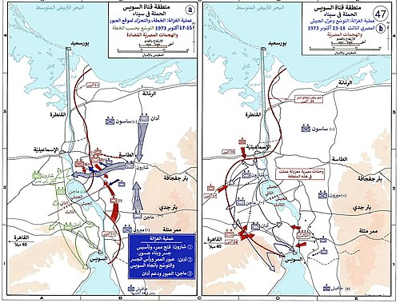
ركزت القوات الإسرائيلية هجومها يوم 15 أكتوبر/تشرين الأول ضد الجانب الأيمن للجيش الثاني في منطقة الدفرسوار وذلك على ضوء المعلومات التي قدمتها طائرات الاستطلاع الجوي الأمريكي، بغرض اختراق الجبهة غرب القناة. كانت القيادة الإسرائيلية تمتلك فرقتان مدرعتان تعملان شرق الدفرسوار بقيادة كل من الجنرال شارون والجنرال أدان، فكانت الفرقتان في مواجهة الفرقة 16 مشاة بقيادة العميد عبد رب النبي حافظ يدعمها لواءٌ مدرعٌ من الفرقة 21، وتمثلت المهمة القتالية لفرقة شارون في إقامة معبرٍ ورأس جسرٍ في منطقة الدفرسوار لتعبر من خلاله فرقة أدان إلى الضفة الغربية، إلا أن فرقة شارون خلال ليلة 15 أكتوبر/تشرين الأول لقيت دفاعاً ضارياً جداً من فرقة عبد رب النبي حافظ مما حد من تقدمها ولكن لعدم التكافؤ في المواجهة (مدرعات ضد مشاة) تكبدت الفرقة 16 مشاة خسائر جسيمة.
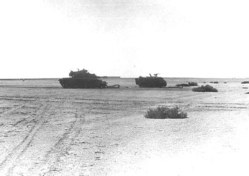
في صباح يوم 16 أكتوبر/تشرين الأول تصاعدت حدة القتال في منطقة المزرعة الصينية شرق الدفرسوار «وهي مزرعة للتجارب أقامتها وزارة الزراعة»، حيث اضطرت القيادة الإسرائيلية إلى إقحام فرقة أدان في المعركة لدعم فرقة شارون وتمكينها من فتح الممر، فاشتبكت الفرقة 16 مشاة بقيادة اللواء عبد رب النبي حافظ مع فرقة أدان في معركة شهيرة سميت باسم «معركة المزرعة الصينية» تكبد فيها الطرفان خسائر كبيرة في الأرواح والمعدات، ونظراً لضراوة مقاومة الفرقة 16 مشاة نقلت القيادة الإسرائيلية لواء مظلات إلى المعركة تكبد هو الآخر خسائرَ فادحةً وبدا عالقاً وسط النيران الكثيفة ولم يخلصه إلا تدخل الدبابات الإسرائيلية. في النهاية تمكن بعضٌ من هذه الدبابات من الوصول إلى غرب القناة عبر المعديات ومهاجمة كتائب الدفاع الجوي لإعطاء فرصة للطيران الإسرائيلي بضرب الأهداف المصرية.
تصور القيادة المصرية في البداية لأهداف العدو من معركة المزرعة الصينية هو محاولة اختراق الفرقة 16 مشاة بغية تدمير رأس جسرها، وعندما أقام الإسرائيليون رأس جسرٍ لهم على الدفرسوار وعبروا إلى غرب القناة بعد تأخيرٍ دام أكثر من يومين بدت أهدافهم لدى الأركان المصرية واضحةً وإن جاءت متأخرة وهي -كما بَسَطها اللواء إبراهيم فؤاد نصار مدير المخابرات الحربية في اجتماع قيادة الأركان مع الرئيس السادات في مركز القيادة رقم 10 يوم 20 أكتوبر- محاولة الاستيلاء على إحدى المدينتين الإسماعيلية أو السويس لإنجاز مكسبٍ على الأرض يحقق ضجةً إعلاميةً كبيرةً، وهو تقدير موقفٍ أثبتته مجريات الأحداث من بعد. حاولت القيادة المصرية يوم 17 أكتوبر/تشرين الأول سد الثغرة من الشرق لمنع وصول أي قواتٍ إسرائيليةٍ إضافيةٍ وعزل القوات الموجودة في الغرب، وذلك عبر دفع أحد ألوية الفرقة 21 المدرعة جنوباً من قطاع الجيش الثاني، في حين يقوم الجيش الثالث بدفع اللواء 25 مدرع -بدباباته ت 62 ذات المدافع من عيار 115 ملم- في اتجاه الشمال شرق البحيرات المرة لغلق الثغرة (على مسيرة أكثر من 30 كم خارج مظلة حائط الصواريخ ودونما دعم جوي) في حين يتصدى اللواء 23 مشاة ميكانيكي للقوات الإسرائيلية الموجودة في الغرب، إلا أن اللواء 25 مدرع أثناء مسيره لتنفيذ مهمته القتالية حوصر من قبل ثلاثة ألويةٍ مدرعةٍ إسرائيليةٍ وفي الوقت نفسه وقع تحت قصف جوي إسرائيلي شديد ما أدى إلى تدميره، ولم ينج منه سوى عشر دباباتٍ مع قائد اللواء من أصل ستٍ وثمانين، وبالتالي لم تنجح عملية سد الثغرة من الشرق واستطاعت فرقة أدان إقامة جسرٍ آخرَ على القناة خلالَ ليلتي 17 و18 أكتوبر/تشرين الأول عبرت عليه فرقتا شارون وأدان المدرعتان.
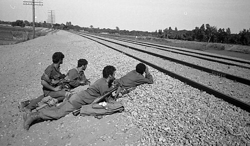
اتجهت فرقة شارون شمالاً في اتجاه الإسماعيلية لتهديد مؤخرة الجيش الثاني الميداني إلا أن قوات هذا الجيش بقيادة اللواء أ.ح عبد المنعم خليل أفشلت ذلك الهجوم على محورين بواسطة اللواء 150 مظلات وكتيبتيْ صاعقةٍ (الكتبة 129 والكتيبة 139) ومعاونةٍ فعالةٍ من مدفعية الجيش الثاني بقيادة العميد أ.ح عبد الحليم أبو غزالة وأمكنها إيقاف تقدم قوات شارون المؤلفة من لواءيْ مدرعاتٍ ولواء مظليين جنوب ترعة الإسماعيلية عند قرية عطوة (جنوب الإسماعيلية بأربعة كيلومتراتٍ) عقب قتالٍ شرسٍ جداً تداخلت فيه قوات الطرفين ووصلت المسافة بينهما إلى أقل من مئة مترٍ أحياناً كثيرة (يذكر بن إليعازر رئيس الأركان الإسرائيلي في مذكراته أنه بعد قتالٍ ضارٍ ليلة 22/ 23 ومع انبلاج فجر 23 أكتوبر فوجئت بعض دبابات شارون وجنوده بالمصريين على بعد عشرين متراً منهم). تصدّى لواء المظليين وكتيبتا الصاعقة المصرية بمفردهم لهجمات المدرعات الإسرائيلية طيلة أيامٍ 17 حتى 22 أكتوبر/تشرين الأول، ونجحوا في منعها من الوصول إلى الإسماعيلية أو تهديد مؤخرة الجيش الثاني. بينما المسافة بين رأس الجسر الإسرائيلي عند الدفرسوار والإسماعيلية لا تتعدى 25 كم.
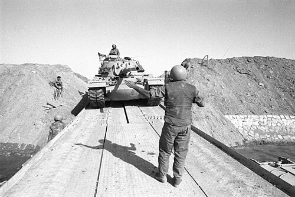
بعد تطور الأوضاع وإلقاء أمريكا بثقلها في الحرب بأسلحتها الحديثة لإنقاذ إسرائيل عبر الجسر الجوي الذي أقامته أيقن الرئيس السادات أنه يواجه أمريكا بثقلها في حين لم يلبِّ الاتحاد السوڤييتي طلباته من السلاح، فقبل العرض الذي طرحه كيسنجر في 16 أكتوبر/تشرين الأول بوقف إطلاق النار، فاجتمع مجلس الأمن في مساء 21 أكتوبر/تشرين الأول وأصدر صباح يوم 22 أكتوبر/تشرين الأول القرار 338 الذي قضى بوقف إطلاق النار بين جميع الأطراف المشتركة في موعدٍ لا يزيد على 12 ساعة من لحظة صدور القرار، ووافقت كل من مصر وإسرائيل رسمياً على القرار، إلا أن إسرائيل لم تحترمْه فعلياً لأنها وجدت نفسها حتى ذلك الوقت لم تستطع تحقيق أية أهدافٍ عسكريةٍ أو استراتيجيةٍ، فلم ترغمِ القيادة المصرية على سحب قواتها إلى غرب القناة مرةً أخرى، ولم تستطع قطع خطوط مواصلات أيٍّ من الجيشين الثاني والثالث، وفشلت في احتلال مدينة الإسماعيلية.
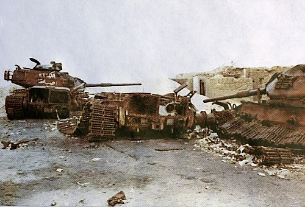
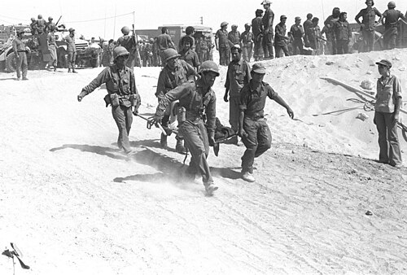
دفعت إسرائيل خلال أيام 22 و23 و24 أكتوبر/تشرين الأول بفرقة مدرعة ثالثة إلى غرب القناة بقيادة الجنرال كلمان ماجن وسارت على ميمنة فرقة أدان والتي استطاعت مع فرقة أدان الضغط على الفرقة الرابعة المدرعة بقيادة العميد عبد العزيز قابيل لاكتساب مزيدٍ من الأرض في ظل حالة عدم التكافؤ سواء العددي أو العتادي وتحت القصف الجوي للطيران الإسرائيلي، فاستطاعت تطويق مدينة السويس وبحلول يوم 24 أكتوبر/تشرين الأول جرى إتمام حصار الجيش الثالث الميداني الموجود شرق القناة وعزله عن مركز قيادته في الغرب وتدمير وسائل العبور في قطاعه من جسورٍ ومعديات. وحاول لواءان من فرقة أدان اقتحام السويس يوم 24 أكتوبر/تشرين الأول إلا أنهما قوبلا بمقاومةٍ شعبيةٍ شرسةٍ من أبناء السويس مع قوةٍ عسكريةٍ من الفرقة 19 مشاة التي كانت تحت قيادة العميد يوسف عفيفي، ودارت معركة بين المدرعات والدبابات الإسرائيلية من جهةٍ وشعب السويس ورجال الشرطة مع قوةٍ عسكريةٍ من جهةٍ أخرى فيما سمي معركة السويس تكبدت خلالها القوات الإسرائيلية خسائرَ فادحةً ولم تستطع اقتحام المدينة وتمركزت خارجها فقط، وأصبح يوم 24 أكتوبر/تشرين الأول عيداً قومياً لمدينة السويس ورمزاً لفدائية وشجاعة أهلها. وبعد ضغطٍ من الاتحاد السوڤييتي أعلنت إسرائيل قبولها وقف إطلاق النار الثاني يوم 24 أكتوبر/تشرين الأول طبقاً لقرار مجلس الأمن رقم 339، كما أصدر مجلس الأمن قراره رقم 340 الذي قضى بإنشاء قوةِ طوارئَ دوليةٍ لمراقبة تنفيذ وقف إطلاق النار، إلا أن القوات الإسرائيلية استمرت في عملياتها خلال أيام 25 و26 و27 أكتوبر/تشرين الأول ولم يتوقفِ القتال فعلياً حتى يوم 28 أكتوبر/تشرين الأول حين تقرر عقد مباحثات الكيلو 101 بين الطرفين برعاية الولايات المتحدة الأمريكية لبحث تثبيت وقف إطلاق النار وإجراءات توصيل الإمدادات لقوات الجيش الثالث في القطاع الجنوبي من الجبهة.
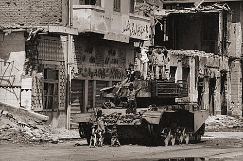
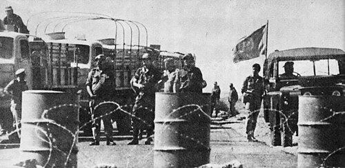
صباح يوم 27 أكتوبر/تشرين الأول تقرر إجراء محادثات بين كل من مصر وإسرائيل بتنسيق من الولايات المتحدة وافق عليها الطرفان لتثبيت وقف إطلاق النار وبحث إجراءات توصيل الإمدادات غير العسكرية للجيش الثالث شرق القناة، وفي نفس الوقت بحث في كيفية تخليص القوات الإسرائيلية غرب القناة من نزيف خسائرها المستمر بعد فشلها في احتلال الإسماعيلية أو السويس ومناقشة الاعتبارات العسكرية لتنفيذ قرارات مجلس الأمن 338 و339 وتبادل الأسرى، على أن تحدد مصر مكان وتوقيت الاجتماع ورتبة ممثلها في المباحثات. اختار الرئيس السادات اللواء عبد الغني الجمسي «رئيس هيئة العمليات» رئيساً للوفد المصري في المفاوضات فيما مثل الوفد الإسرائيلي الجنرال أهارون ياريف «مساعد رئيس الأركان»، وبحضور الجنرال سيلاسفيو ممثلاً للأمم المتحدة، واختير الكيلو متر 101 طريق القاهرة - السويس الصحراوي مكاناً لعقد المباحثات تحت إشراف الأمم المتحدة، والتي بدأت مساء يوم 28 أكتوبر/تشرين الأول وتكررت بعد ذلك عدة مرات.
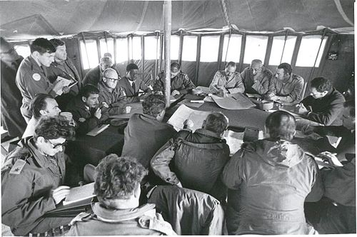
صباح يوم 27 أكتوبر/تشرين الأول تقرر إجراء محادثات بين كل من مصر وإسرائيل بتنسيق من الولايات المتحدة وافق عليها الطرفان لتثبيت وقف إطلاق النار وبحث إجراءات توصيل الإمدادات غير العسكرية للجيش الثالث شرق القناة، وفي نفس الوقت بحث في كيفية تخليص القوات الإسرائيلية غرب القناة من نزيف خسائرها المستمر بعد فشلها في احتلال الإسماعيلية أو السويس ومناقشة الاعتبارات العسكرية لتنفيذ قرارات مجلس الأمن 338 و339 وتبادل الأسرى، على أن تحدد مصر مكان وتوقيت الاجتماع ورتبة ممثلها في المباحثات. اختار الرئيس السادات اللواء عبد الغني الجمسي «رئيس هيئة العمليات» رئيساً للوفد المصري في المفاوضات فيما مثل الوفد الإسرائيلي الجنرال أهارون ياريف «مساعد رئيس الأركان»، وبحضور الجنرال سيلاسفيو ممثلاً للأمم المتحدة، واختير الكيلو متر 101 طريق القاهرة - السويس الصحراوي مكاناً لعقد المباحثات تحت إشراف الأمم المتحدة، والتي بدأت مساء يوم 28 أكتوبر/تشرين الأول وتكررت بعد ذلك عدة مرات.
| التشكيل | مصر | سوريا | إسرائيل |
|---|---|---|---|
| لواء مدرع | 10 | 10 | 16 |
| لواء ميكانيكي "آلي" | 8 | 5 | 6 |
| لواء مشاة | 19 | 12 | 9 |
| لواء قوات خاصة "مظليين، محمولة جواً، مغاوير" | 3 | - | 5 |
| لواء صواريخ | (R-17E) 1 | – | - |
| السلاح | مصر | سوريا | إسرائيل |
|---|---|---|---|
| دبابات | 1700 | 1600-1800 | 2350-2400 |
| مركبات مدرعة | 2000 | 1300-1500 | 4000 |
| مدافع وهاونات وراجمات صواريخ | 2500 | 1000-1200 | 950-1470 |
| طائرات (مقاتلة، قاذفة، عمودية) | 650-750 | 310-350 | 465-485 |
| زوارق طوربيد | 34-36 | 13-17 | 9-81 |
| زوارق صواريخ | 17-19 | 8-9 | 14 |
| زوارق دورية | 12 | 3 | 20 |
| مدمرات | 5 | - | - |
| فرقاطات | 3 | - | - |
| غواصات | 12 | - | 12 |
| كاسحات ألغام | 8-14 | 4 | 4 |
| سفن إنزال | 14 | - | 10 |
مدرسة ستي سبورت
حقوق النشر محفوظة ©